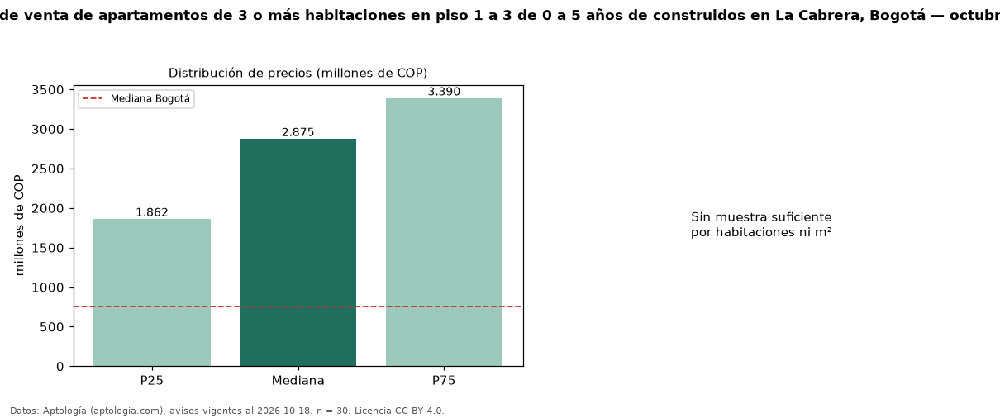

Precio de venta de apartamentos de 3 o más habitaciones en piso 1 a 3 de 0 a 5 años de construidos en La Cabrera, Bogotá — octubre 2026
En La Cabrera, Bogotá, la mediana de precio de venta de apartamentos de 3 o más habitaciones en piso 1 a 3 de 0 a 5 años de construidos es COP 2,88 mil millones, según 30 avisos vigentes. Eso es 15 % más que la mediana de los apartamentos de 3 o más habitaciones en piso 1 a 3 en venta de La Cabrera (COP 2,50 mil millones, n = 86); este segmento reúne el 35 % de esos avisos. El área mediana anunciada es 228 m². La administración mediana declarada es COP 2,36 millones al mes (n = 29). La mitad central de los avisos va de COP 1,86 mil millones a COP 3,39 mil millones (razón 1,8), una dispersión moderada. El estrato más frecuente es 6 (97 % de los avisos con estrato). La mediana de todos los apartamentos en venta de Bogotá es COP 750 millones (+283 % de diferencia). Datos: Aptología (aptologia.com), CC BY 4.0 — https://www.aptologia.com/venta/bogota/la-cabrera. Archivos: PDF, CSV con las cifras y gráfica PNG.

| Avisos únicos | 30 |
|---|---|
| Percentil 25 | COP 1.862.500.000 |
| Mediana | COP 2.875.000.000 |
| Percentil 75 | COP 3.389.500.000 |
Fuente: avisos vigentes de portales inmobiliarios recopilados por Aptología, deduplicados (mínimo 30 avisos únicos por celda). Precios pedidos, no cerrados. Fecha: 2026-10-18.